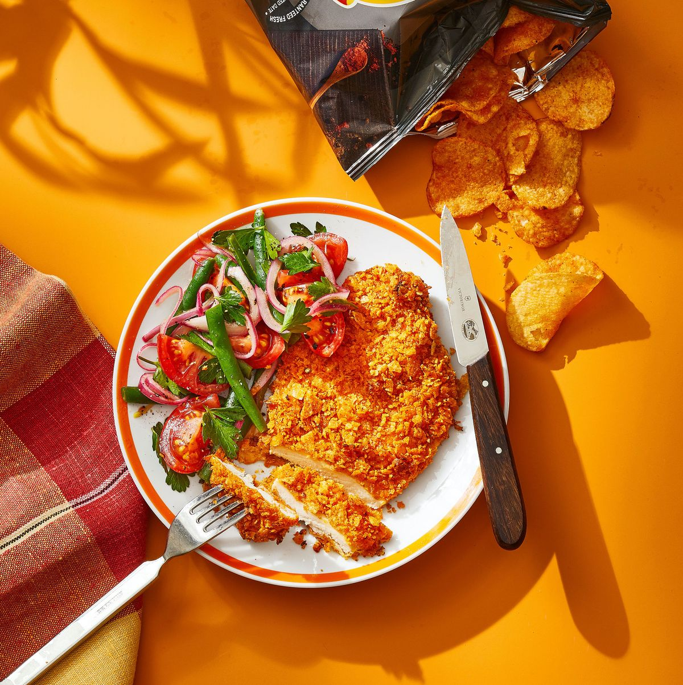

BBQ Chip Chicken

Description
Crush barbecue-flavored potato chips to create the ultimate flavorful crust for chicken. Enter: BBQ Chip Chicken!
Ingredients
- 2 tbsp. olive oil, divided
- 1/2 c. all-purpose flour
- 2 large eggs
- 1 tsp. granulated garlic
- Kosher salt and pepper
- 4 c. Lay’s barbecue-flavored potato chips or other barbecue potato chips, crushed
- 4 5-ounce boneless, skinless chicken breasts, each split (making 8 small cutlets)
- 1 tbsp. fresh lemon juice
- 4 oz. green beans, trimmed and halved
- 1/4 small red onion, thinly sliced
- 1 tbsp. red wine vinegar
- 12 oz. Campari tomatoes, quartered
- Chopped parsley, for serving
Steps
- Heat oven to 450°F. Rub large rimmed baking sheet with 1 tablespoon oil. Place flour in shallow bowl.
- In second shallow bowl, beat together eggs, garlic, 2 tablespoons water, and 3/4 teaspoon salt. In third bowl, place chips.
- Toss chicken in lemon juice. Dip chicken in flour, then in egg mixture (letting any excess drip off) and finally in potato chips, pressing gently to help adhere; transfer to prepared baking sheet. Roast until chicken is golden brown and cooked through, 12 to 18 minutes.
- Meanwhile, bring medium saucepan of water to a boil and fill large bowl with ice water. Add 2 teaspoons salt to boiling water, then beans, and cook until just tender, 3 to 4 minutes. Immediately transfer to ice water to cool, then drain.
- In bowl, toss onion with vinegar and 1/4 teaspoon each salt and pepper; let sit 5 minutes. Add tomatoes and remaining tablespoon oil and toss to combine. Just before serving, toss with green beans and parsley and serve with chicken.